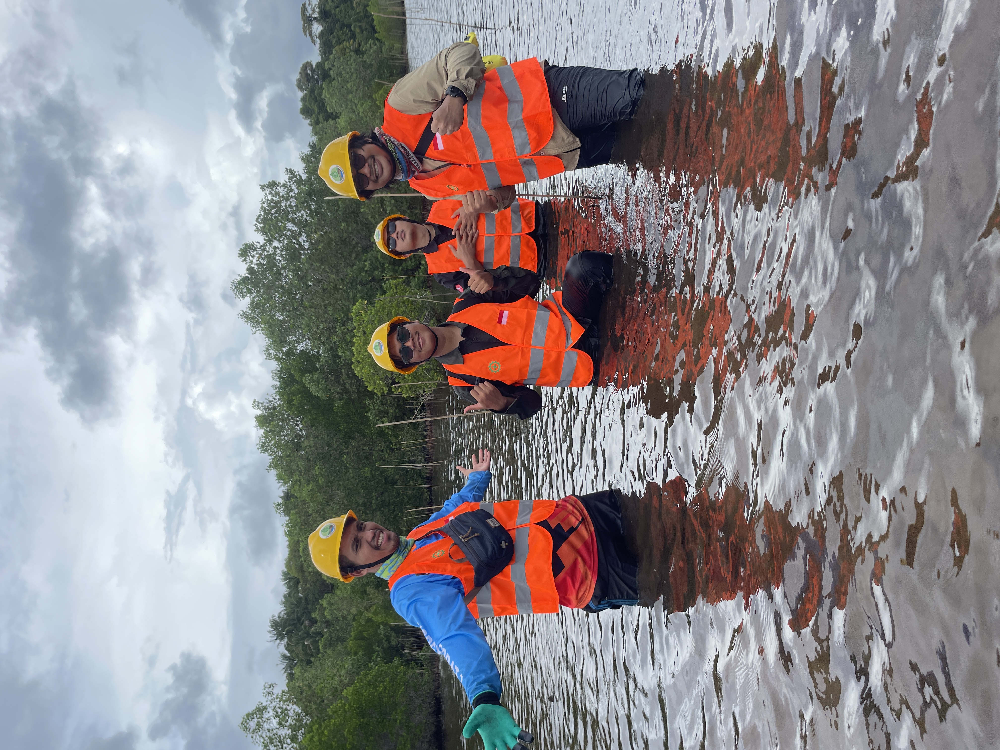
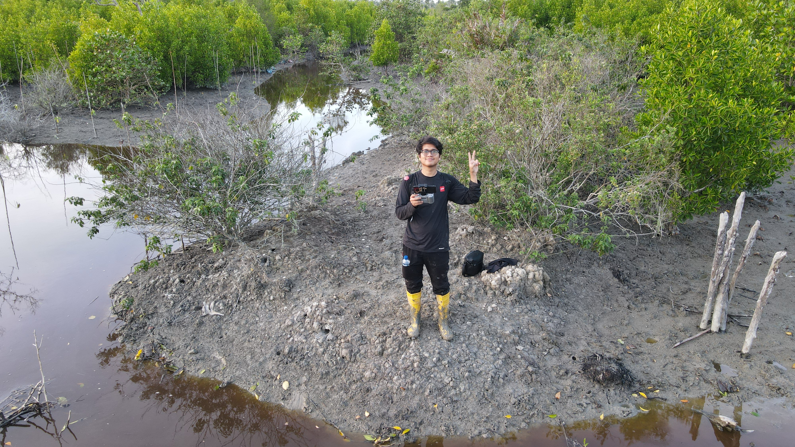
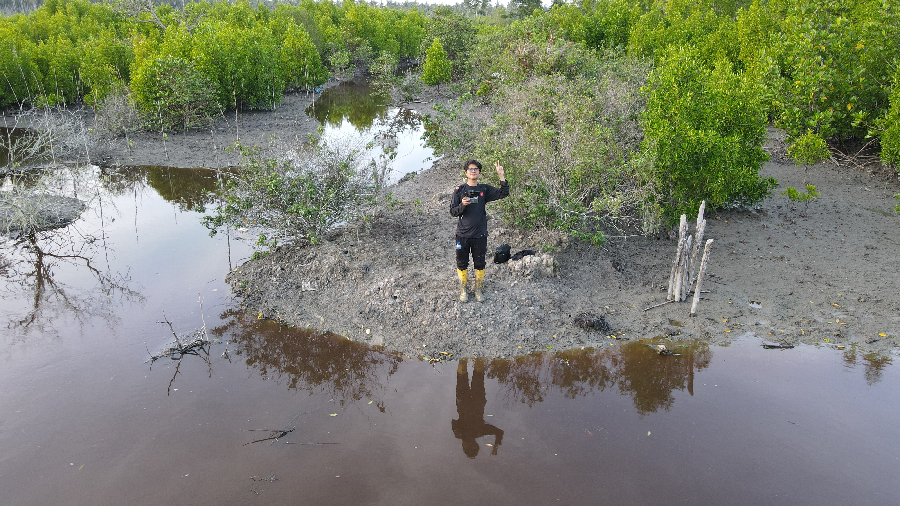
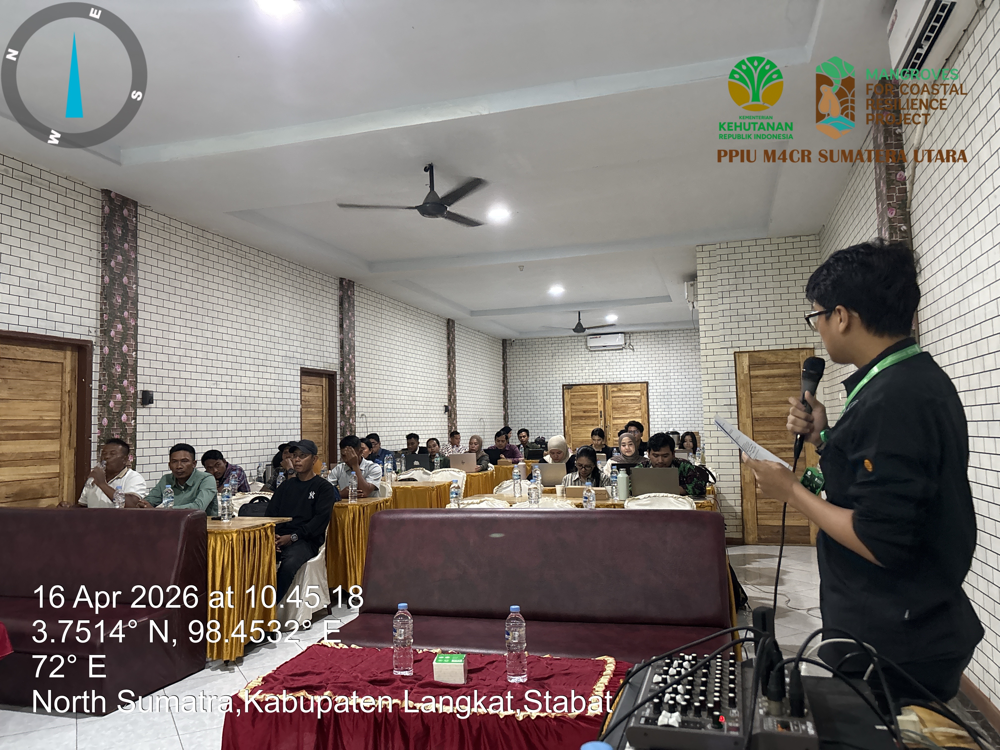

Proyek Unggulan
Proyek pilihan yang mencerminkan keahlian dan dampak nyata di lapangan

Penanaman Mangrove Skala Besar
Program penanaman dan pemulihan ekosistem mangrove di wilayah pesisir target nasional dengan pendekatan berbasis ekologi.

Pemetaan Distribusi Mangrove Nasional
Pemetaan dan analisis perubahan tutupan mangrove menggunakan citra satelit multi-temporal untuk mendukung kebijakan restorasi.

Survei Aerial Kawasan Mangrove
Pelaksanaan survei menggunakan drone untuk menghasilkan orthophoto dan DSM beresolusi tinggi sebagai basis peta kerja lapangan.

Pemberdayaan Masyarakat Pesisir
Program pendampingan dan pelatihan masyarakat nelayan dan petani pesisir dalam pengelolaan mangrove berbasis komunitas berkelanjutan.

Sistem Monitoring Mangrove Terpadu
Pengembangan sistem pemantauan kondisi mangrove secara berkala menggunakan integrasi data lapangan, GIS, dan penginderaan jauh.

Validasi Lapangan via Drone & GIS
Integrasi data drone dan analisis GIS untuk validasi tutupan mangrove dan identifikasi area prioritas restorasi secara akurat.